最好的建模平台

入门教程
1 关联算子
1.1 功能描述
根据选择的关联条件将两个数据表进行连接,默认左连接。
1.2 用户界面
用户根据数据表信息，点击按钮可增加连接条件，点击按钮可减少连接条件。
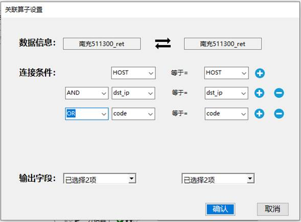
Ø 模糊查找
连接条件为单选框，支持用户对下拉列表内容进行模糊查找。若存在匹配项，下拉列表弹出并展示匹配项，否则弹出空下拉列表。
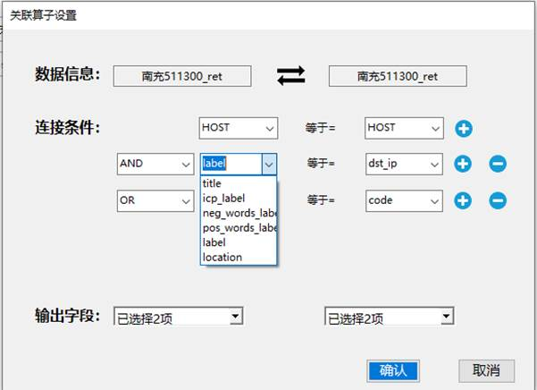
输出字段为复选框，支持用户模糊查找字段。若查找到匹配项，可点击矩形框进行勾选（遇到进行多次查找的情况时，保留之前查找勾选结果）；若无匹配项，显示“未找到结果”。
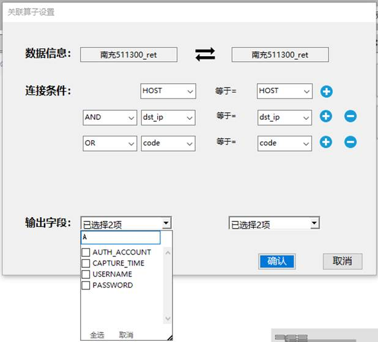
2 碰撞算子
2.1 功能描述
对两个数据表的选择字段进行取交集,输出两表都存在的数据。
2.2 用户界面
Ø 碰撞条件设置
用户根据数据表信息，点击按钮可增加碰撞条件，点击按钮可减少碰撞条件。
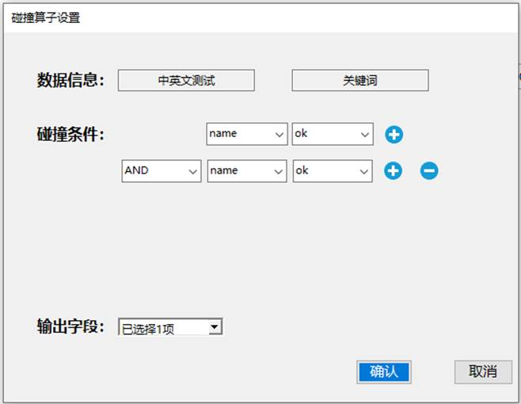
Ø 模糊查找
碰撞条件为单选框，支持用户对下拉列表内容进行模糊查找。若存在匹配项，下拉列表弹出并展示匹配项，否则弹出空下拉列表。
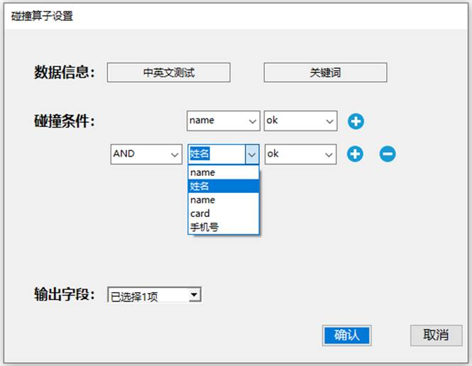
输出字段为复选框，支持用户模糊查找字段。若查找到匹配项，可点击矩形框进行勾选（遇到进行多次查找的情况时，保留之前查找勾选结果）；若无匹配项，显示“未找到结果”。
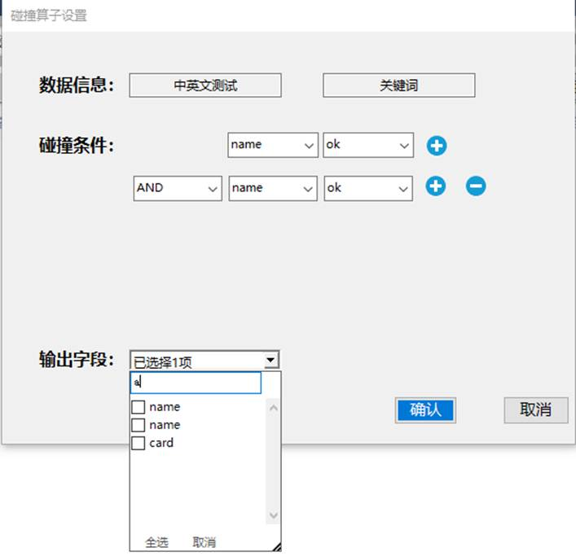
3 取并算子
3.1 功能描述
对两个数据表的选择字段进行合并。
3.2 用户界面
Ø 并集条件设置
用户根据数据表信息，点击按钮可增加并集条件，点击按钮可减少并集条件。
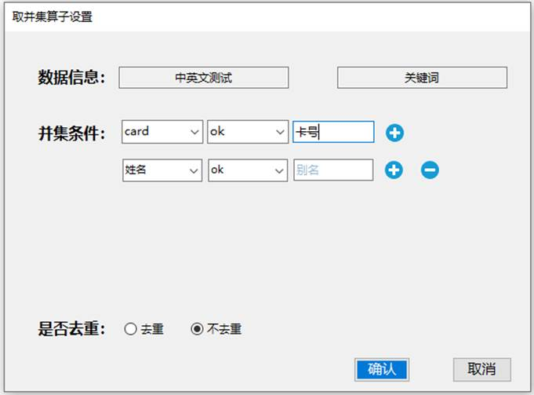
Ø 模糊查找
并集条件为单选框，支持用户对下拉列表内容进行模糊查找。若存在匹配项，下拉列表弹出并展示匹配项，否则弹出空下拉列表。
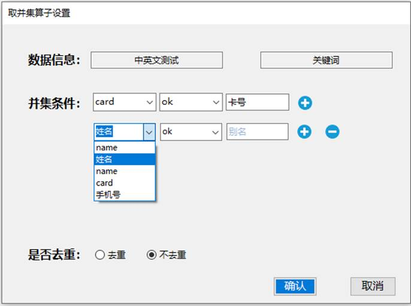
Ø 别名设置
用户选择查看字段可设置别名，光标移入别名框“别名”二字消失，输入别名信息。
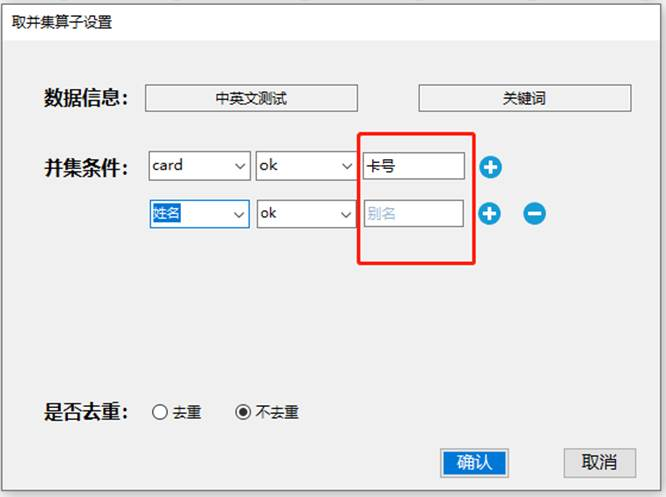
Ø 输出设置
用户在并集条件中设置别名，输出结果显示为用户设置的别名；若用户未设置别名字段，则默认按并集条件中左表字段名输出。
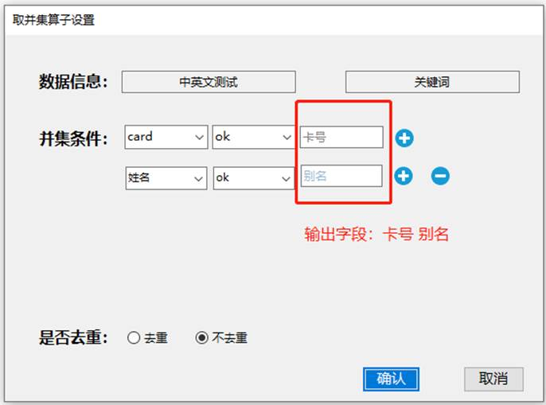
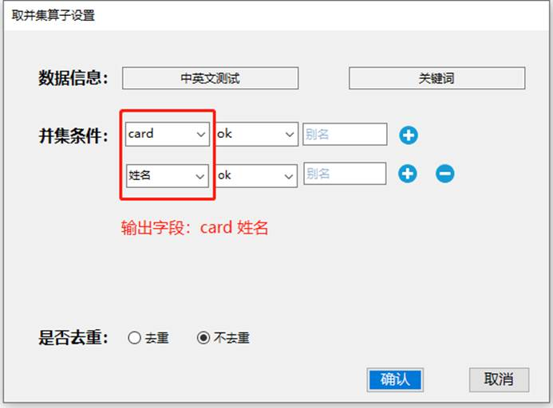
Ø 数据去重
用户选择是否去除重复项（单选项）后，获得取并集结果。
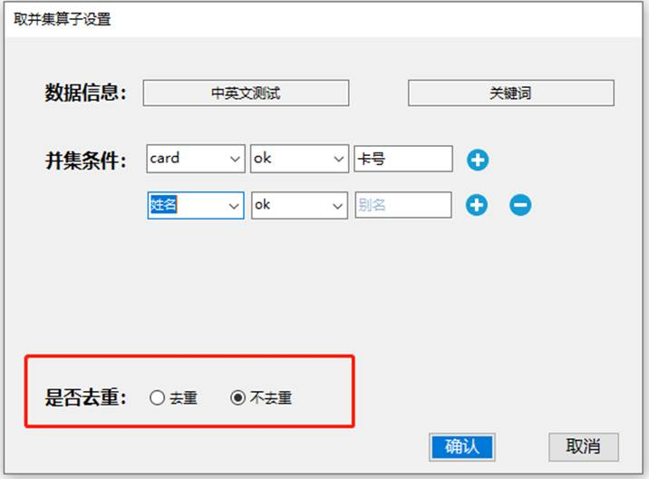
4 取差算子
4.1 功能描述
比较查找左表存在而右表不存在的数据行。
4.2 用户界面
Ø 差集条件设置
用户根据数据表信息，点击按钮可增加差集条件，点击按钮可减少差集条件。
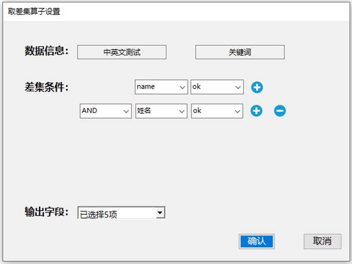
Ø 模糊查找
差集条件为单选框，支持用户对下拉列表内容进行模糊查找。若存在匹配项，下拉列表弹出并展示匹配项，否则弹出空下拉列表。
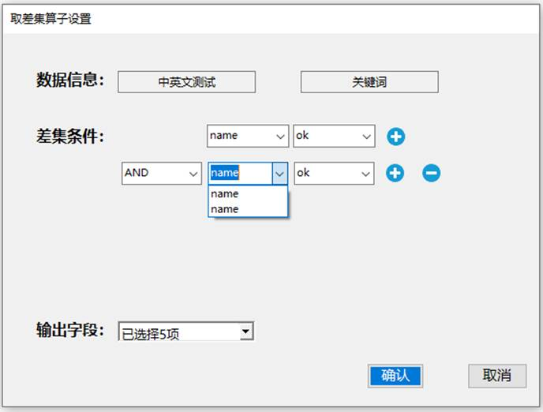
输出字段为复选框，支持用户模糊查找字段。若查找到匹配项，可点击矩形框进行勾选（遇到进行多次查找的情况时，保留之前查找勾选结果）；若无匹配项，显示“未找到结果”。
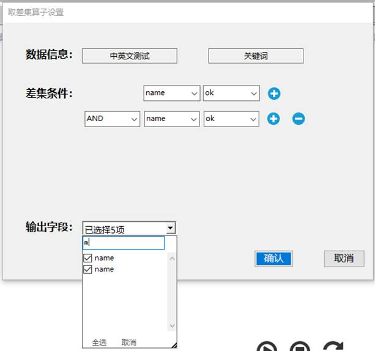
5 随机采样算子
5.1 功能描述
随机输出n条数据。
5.2 用户界面
Ø 随机条数设置
用户设置随机条数数值，将从数据中随机选择用户设置的数据行数，若用户选择随机条数超过数据最大行数，默认输出数据的所有行。
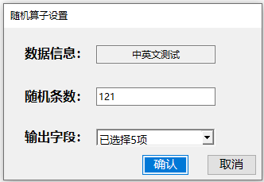
Ø 模糊查找
输出字段为复选框，支持用户模糊查找字段。若查找到匹配项，可点击矩形框进行勾选（遇到进行多次查找的情况时，保留之前查找勾选结果）；若无匹配项，显示“未找到结果”。
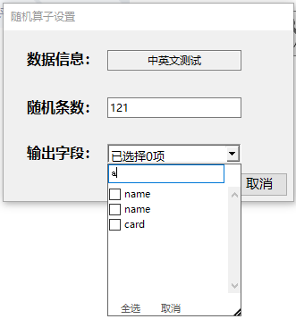
6 条件筛选算子
6.1 功能描述
根据数值筛选条件设置查看符合条件的所在行数据。
6.2 用户界面
Ø 过滤条件设置
用户根据数据表信息，点击按钮可增加过滤条件，点击按钮可减少过滤条件。
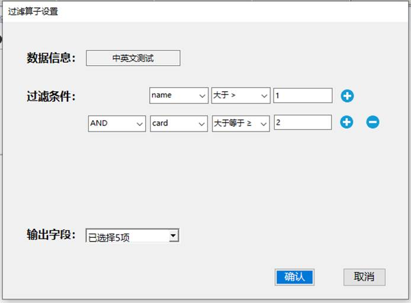
Ø 模糊查找
过滤条件为单选框，支持用户对下拉列表内容进行模糊查找。若存在匹配项，下拉列表弹出并展示匹配项，否则弹出空下拉列表。
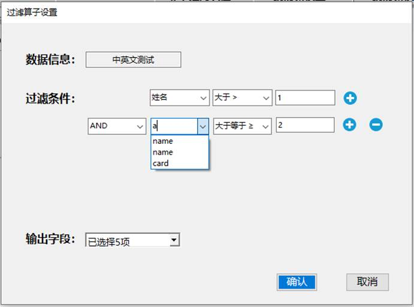
输出字段为复选框，支持用户模糊查找字段。若查找到匹配项，可点击矩形框进行勾选（遇到进行多次查找的情况时，保留之前查找勾选结果）；若无匹配项，显示“未找到结果”。
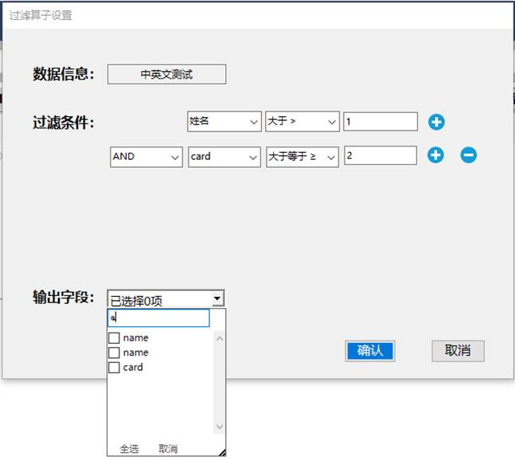
7 取平均值算子
7.1 功能描述
计算选择字段的平均值。
7.2 用户界面
Ø 平均值设置
用户根据数据表选择需要计算平均值的字段。
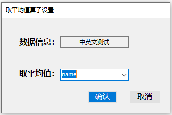
Ø 模糊查找
取平均值为单选框，支持用户对下拉列表内容进行模糊查找。若存在匹配项，下拉列表弹出并展示匹配项，否则弹出空下拉列表。
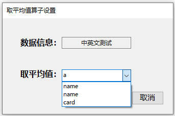
8 取最大值算子
8.1 功能描述
取最大值算子用于提取选择字段的最大值，查看相关数据信息。
8.2 用户界面
Ø 取最大值设置
用户选择取最大值字段以及输出字段。
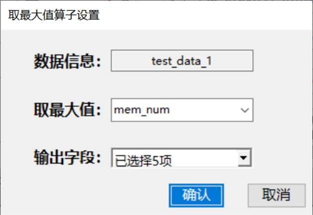
Ø 模糊查找
用户通过数据表选择取最大值字段，取最大值选择字段为单选框。
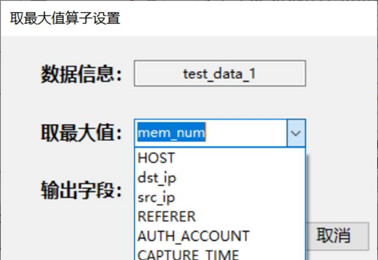
支持用户输入查找字段，若查找到匹配项，则展示匹配结果进行勾选。
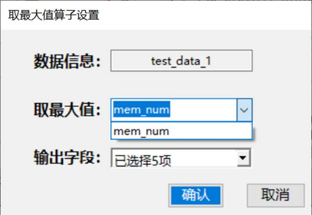
若无匹配项，下拉列表框为空。
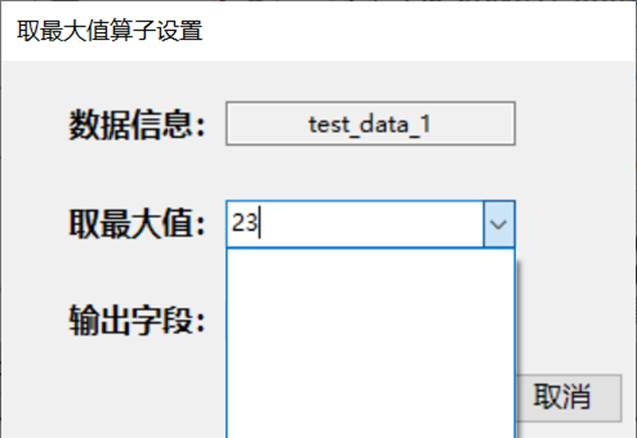
用户可选择输出字段，获得输出结果。输出字段为复选框，可选择多个字段进行结果输出。
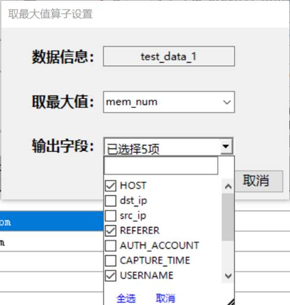
支持用户输入查找字段，若查找到匹配项，则展示匹配结果进行勾选（遇到进行多次查找的情况时，可保留之前查找勾选结果）。
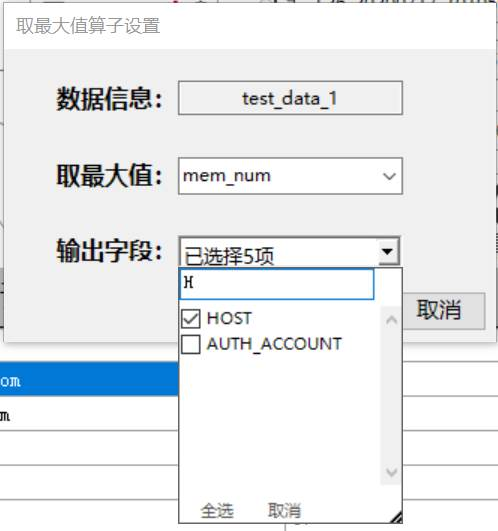
若无匹配项，显示“未找到结果”。
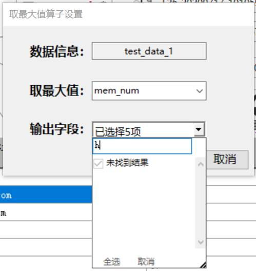
9 取最小值算子
9.1 功能描述
取最小值算子用于提取选择字段的最小值，查看相关数据信息。
9.2 用户界面
Ø 取最小值设置
用户选择取最小值字段以及输出字段。
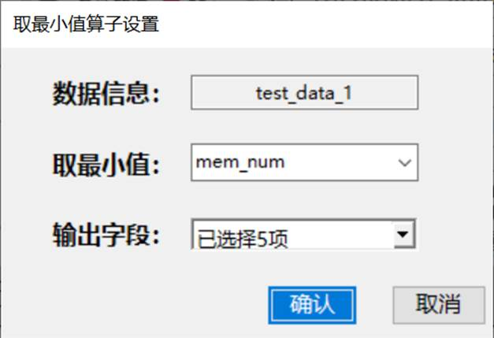
Ø 模糊查找
用户通过数据表选择取最大值字段，取最大值选择字段为单选框。
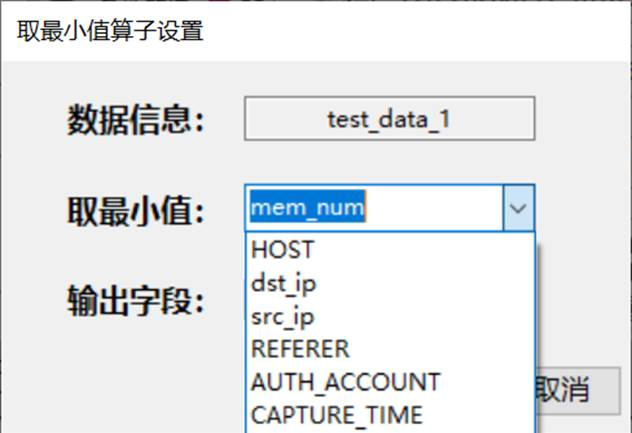
支持用户输入查找字段，若查找到匹配项，则展示匹配结果进行勾选。
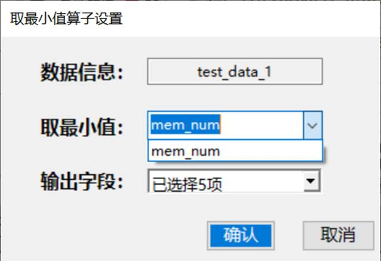
若无匹配项，下拉列表框为空。
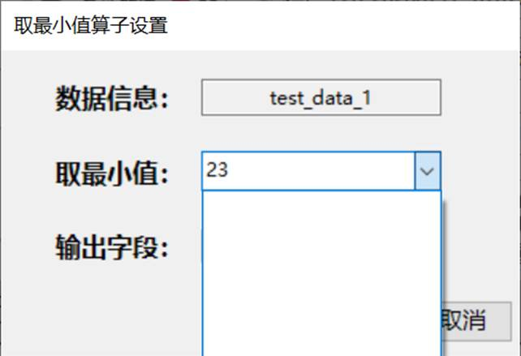
用户可选择输出字段，获得输出结果。输出字段为复选框，可选择多个字段进行结果输出。
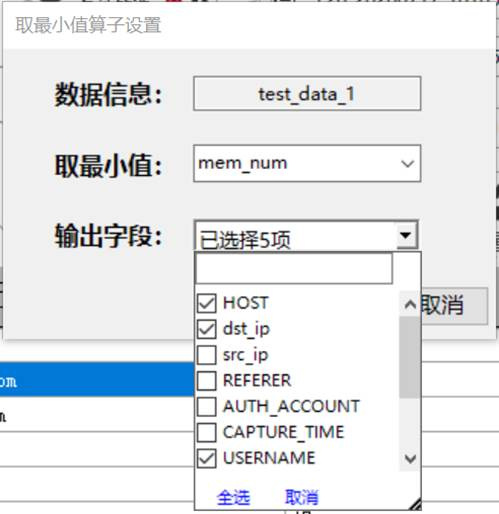
支持用户输入查找字段，若查找到匹配项，则展示匹配结果进行勾选（遇到进行多次查找的情况时，可保留之前查找勾选结果）。
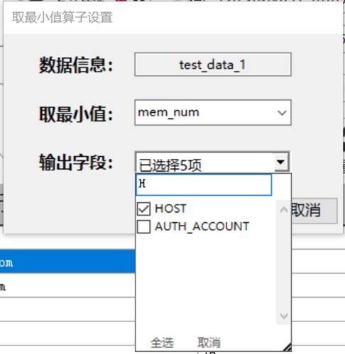
若无匹配项，显示“未找到结果”。
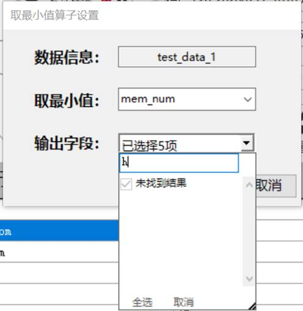
10 频率统计算子
10.1 功能描述
频率统计算子用于统计选择字段出现次数。
10.2 用户界面
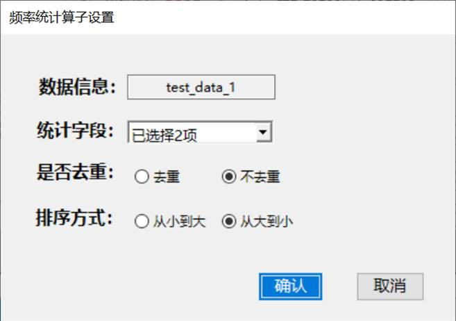
Ø 频率统计条件设置
统计字段为复选框，可选择多个字段进行频率统计。
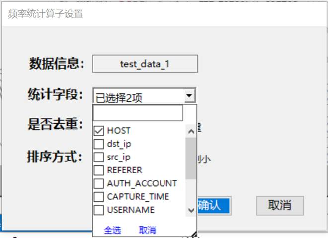
用户可选择是否去重后（单选）进行频率统计，并选择排序方式（单选）将所有字段结果输出。
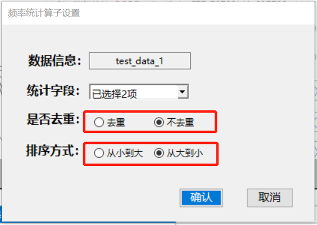
Ø 模糊查找
支持用户输入查找字段，若查找到匹配项，则展示匹配结果进行勾选（遇到进行多次查找的情况时，保留之前查找勾选结果）；
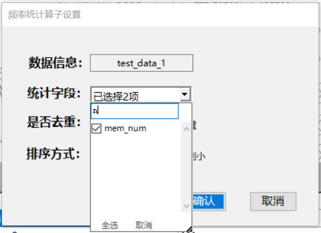
若无匹配项，显示“未找到结果”。
11 排序算子
11.1 功能描述
排序算子根据选择字段进行排序，支持数据去重。
11.2 用户界面
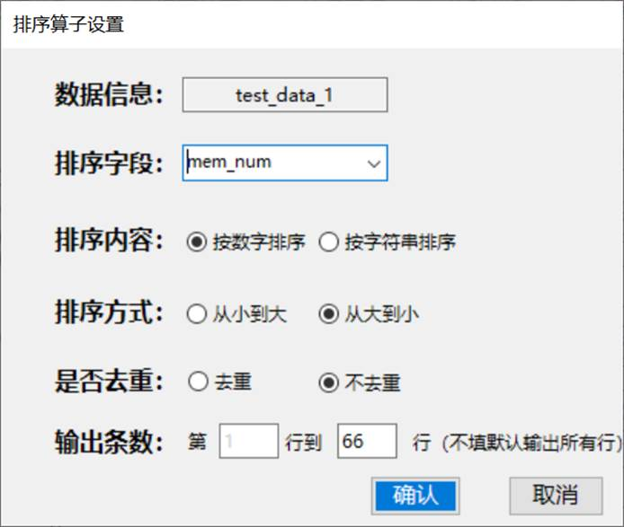
Ø 排序条件设置
用户可根据排序内容选择排序方式（按数字或字符串排序，选择按钮为单选按钮）对数据表进行排序处理。
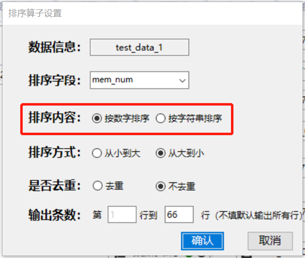
用户可选择排序方式（单选），并选择是否去重（单选）对数据进行去重处理。
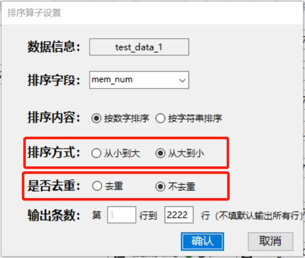
手动输入输出条数查看输出结果，若没有填写输出条数或手动输入输出条数若超过数据最大行数，默认输出所有排序结果；手动输入从第n行开始，若输入行数<1,则会弹出提示框。
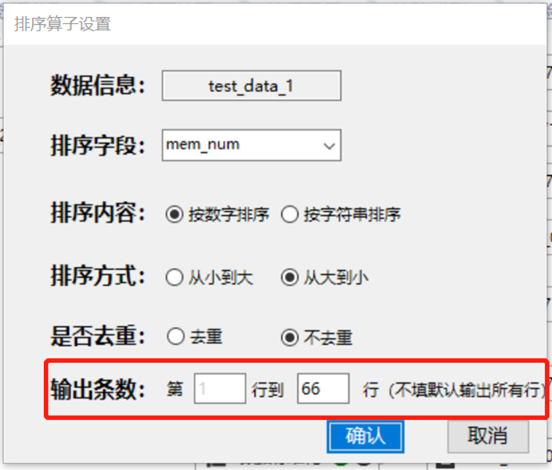
Ø 模糊查找
排序字段为单选框，支持用户输入查找字段。
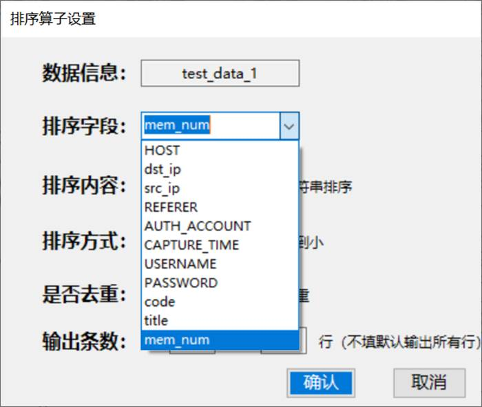
若查找到匹配项，则展示匹配结果进行勾选。
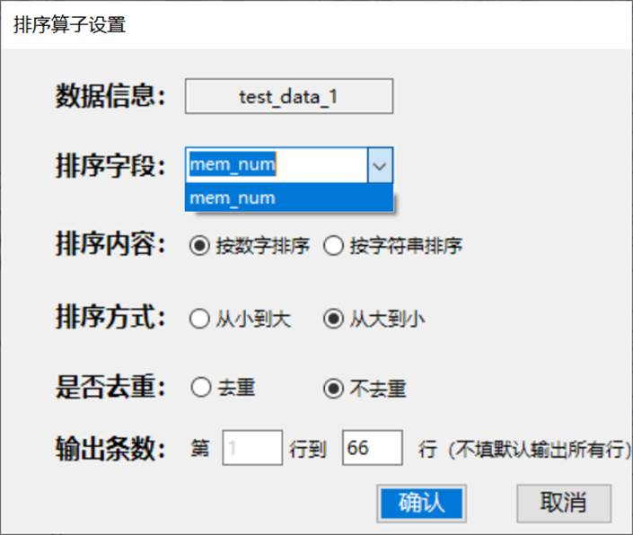
若无匹配项，下拉列表框为空。
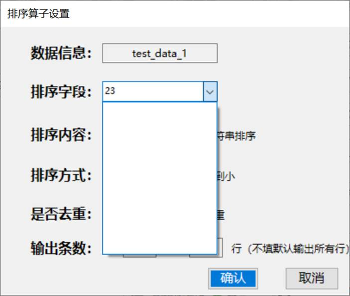
12 分组算子
12.1 功能描述
分组算子根据选择字段对文本进行分组展示。
12.2 用户界面
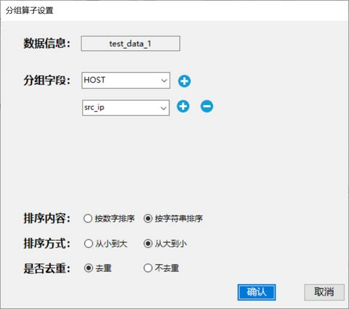
Ø 分组条件设置
用户根据数据表信息，点击按钮可增加分组条件，点击按钮可减少分组条件。
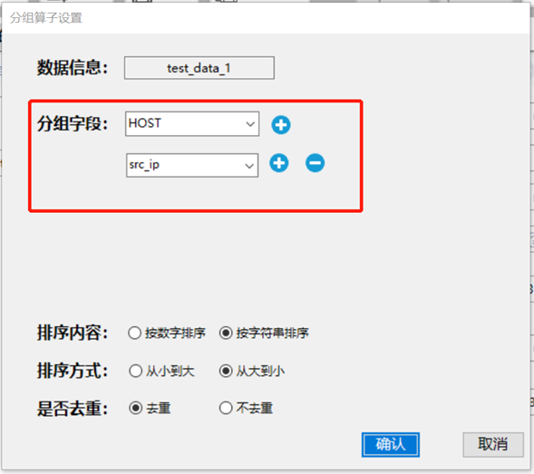
用户可根据排序内容选择排序方式（按数字或字符串排序，选择按钮为单选按钮）对数据表进行排序处理。
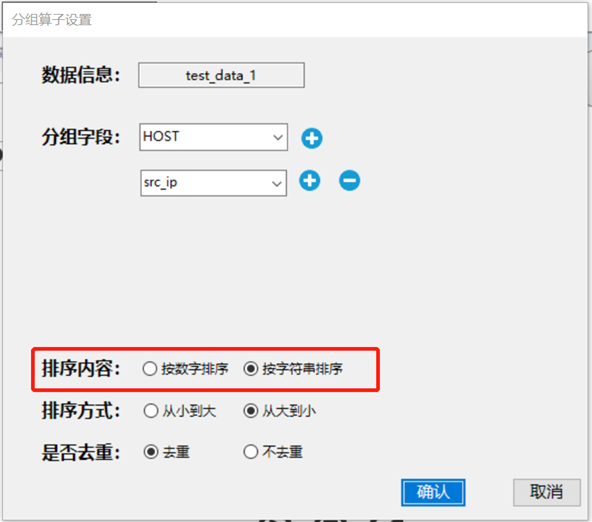
用户可选择排序方式（单选），并选择是否去重（单选）对数据进行去重处理。
Ø 模糊查找
分组关键字为单选框，支持用户输入查找字段。
若查找到匹配项，则展示匹配结果进行勾选。
若无匹配项，下拉列表框为空。
13 关键词过滤算子
13.1 功能描述
关键词过滤算子主要用文本关键词对数据字段进行过滤。
13.2 用户界面
Ø 分组条件设置
数据源输入为双输入，分别为需过滤数据信息和包含文本关键词字段的文件。
用户设置过滤条件，选择文本过滤字段以及关键词字段，条件可选择“命中提取”或“过滤去噪”。
用户可对过滤条件进行预览，关键词行之间默认OR连接，每行空格之间默认AND连接。用括号包含每行AND连接的关键词，默认执行次序为先AND后OR。
Ø 模糊查找
文本过滤条件选择字段以及关键词选择字段均为单选框，支持用户输入查找字段。
若查找到匹配项，则展示匹配结果进行勾选。
若无匹配项，下拉列表框为空。
输出字段为复选框，可选择多个字段进行结果输出。
支持用户输入查找字段，若查找到匹配项，则展示匹配结果进行勾选（遇到进行多次查找的情况时，保留之前查找勾选结果）。
若无匹配项，显示“未找到结果”。
14 数据标准化算子
14.1 功能描述
当存在数据表中数据字段较多的情况时，用户可通过数据标准化算子选择需要查看的字段，并对选择字段按照选择顺序进行查看。
14.2 用户界面
Ø 数据标准化设置
用户根据数据表信息，点击按钮可增加数据标准化条件，点击按钮可减少数据标准化条件。
Ø 别名设置
用户选择查看字段可设置别名，光标移入别名框“别名”二字消失，输入别名信息。
Ø 模糊查找
用户可选择多个字段进行查看，选择字段按照选择顺序进行自动编号。添加条件选择字段均为单选框，支持用户输入查找字段。
若查找到匹配项，则展示匹配结果进行勾选。
若无匹配项，下拉列表框为空。